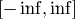
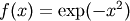
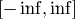
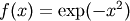
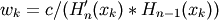
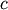
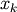
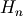
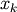
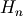

numpy.polynomial.hermite.hermgauss¶
- numpy.polynomial.hermite.hermgauss(deg)¶
Gauss-Hermite quadrature.
Computes the sample points and weights for Gauss-Hermite quadrature. These sample points and weights will correctly integrate polynomials of degree
 or less over the interval 
with the weight function .
or less over the interval 
with the weight function .Parameters : deg : int
Number of sample points and weights. It must be >= 1.
Returns : x : ndarray
1-D ndarray containing the sample points.
y : ndarray
1-D ndarray containing the weights.
Notes
The results have only been tested up to degree 100, higher degrees may be problematic. The weights are determined by using the fact that

where  is a constant independent of
 and 
is the k’th root of , and then scaling the results to get
the right value when integrating 1.
and 
is the k’th root of , and then scaling the results to get
the right value when integrating 1.

Previous topic
numpy.polynomial.hermite.hermpow
Next topic
numpy.polynomial.hermite.hermweight